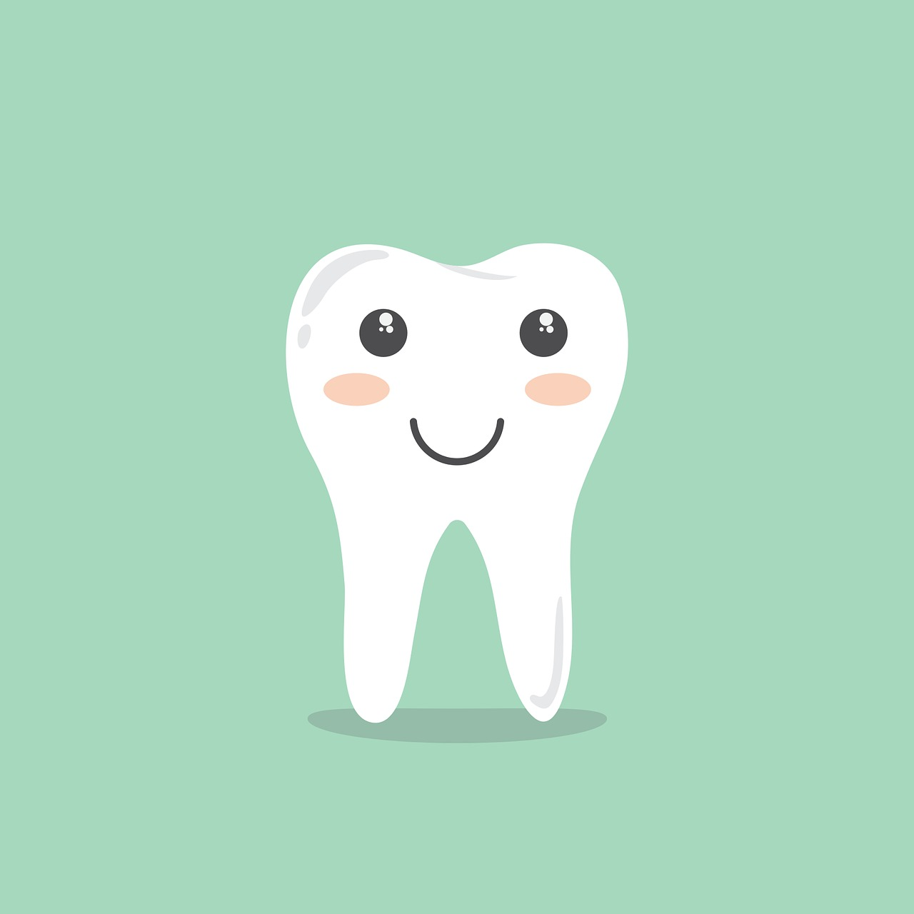
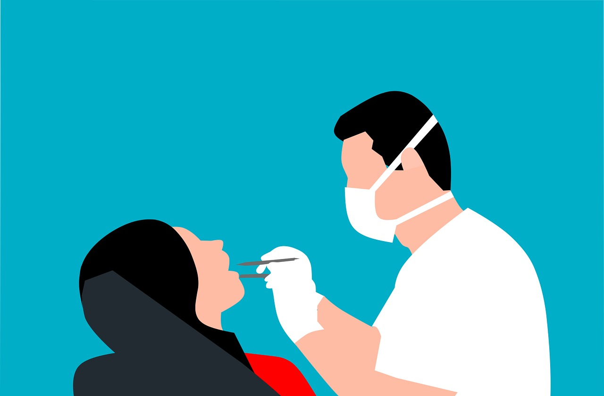
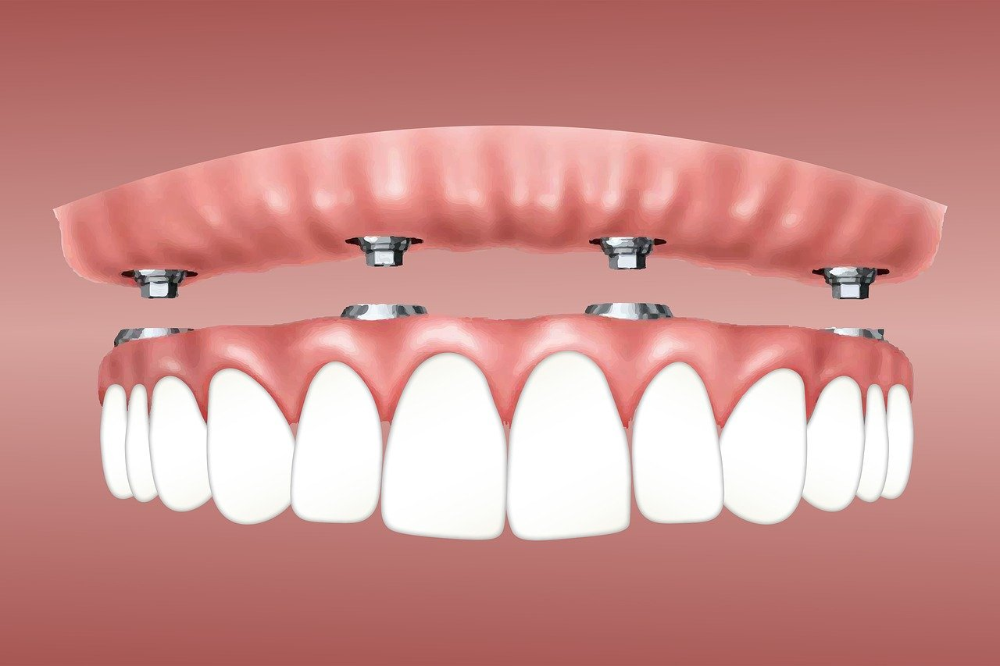
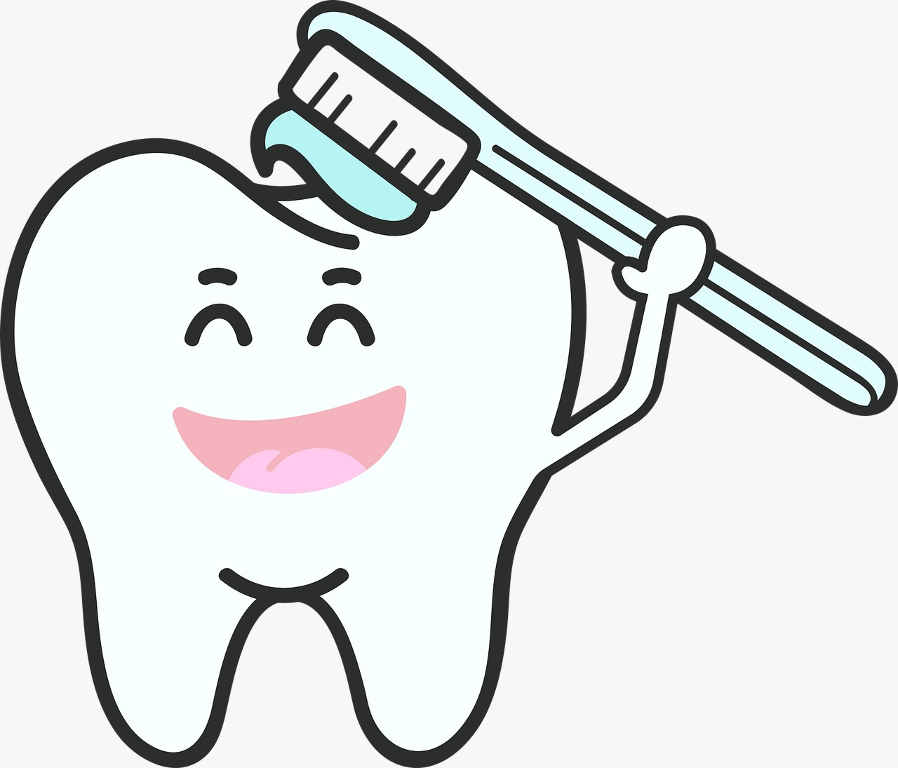

Educación y formación
Los odontólogos, también conocidos como dentistas, deben completar un programa de grado de odontología en una universidad
acreditada y obtener una licencia para ejercer. La formación incluye estudios en anatomía oral, fisiología, histología,
microbiología, farmacología y otras áreas relacionadas.

Especialidades
La odontología tiene diversas especialidades que abordan diferentes aspectos de la salud bucal. Algunas de estas especialidades
incluyen:
- Ortodoncia
- Periodoncia
- Endodoncia
- Odontopediatría
- Cirugía oral
- Maxilofacial

Diagnóstico y tratamiento
Los odontólogos realizan exámenes de la boca y los dientes para diagnosticar problemas como caries, enfermedades de las encías,
maloclusiones y otros trastornos. Los tratamientos comunes incluyen la limpieza dental, la obturación de cavidades, la
extracción de dientes, la realización de tratamientos de conducto, la colocación de prótesis dentales, entre otros.

Prevención
La odontología pone un fuerte énfasis en la prevención de enfermedades bucales.
| Cuidados recomendados |
| Cepillado regular |
Cepillarse dos veces al día con cepillo suave y pasta de flúor previene caries y enfermedades de las encías. |
| Uso de hilo dental |
Usar hilo dental a diario limpia entre los dientes y bajo las encías, eliminando placa y restos de alimentos para
prevenir caries y enfermedades de las encías. |
| Enjuague bucal |
Usar enjuague bucal con flúor fortalece el esmalte y previene la caries. Algunos con propiedades antibacterianas reducen
la placa y el mal aliento. |
| Visitas regulares al dentista |
Programar revisiones dentales cada seis meses con un profesional de odontología detecta y trata problemas tempranos,
evitando complicaciones. |
| Alimentación saludable |
Una dieta equilibrada y reducir el consumo de azúcares previene la caries. Alimentos con calcio y vitamina D fortalecen
dientes y huesos. |
| Evitar hábitos nocivos |
Evitar tabaco y moderar alcohol reduce riesgos de enfermedades de encías, cáncer oral y otros problemas bucales. |
| Protección durante actividades deportivas |
Usar protectores bucales en deportes de contacto o actividades recreativas previene lesiones dentales. |

Tecnología y avances
La odontología ha experimentado numerosos avances tecnológicos en las últimas décadas, lo que ha mejorado tanto los diagnósticos
como los tratamientos. Esto incluye el uso de radiografías digitales, escáneres intraorales, impresión 3D para prótesis dentales,
técnicas de blanqueamiento dental avanzadas, entre otros.